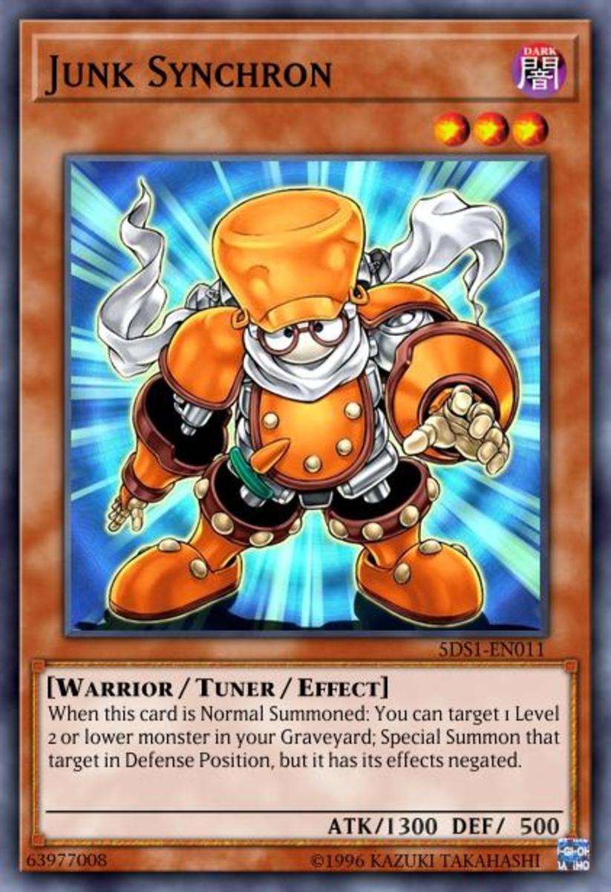
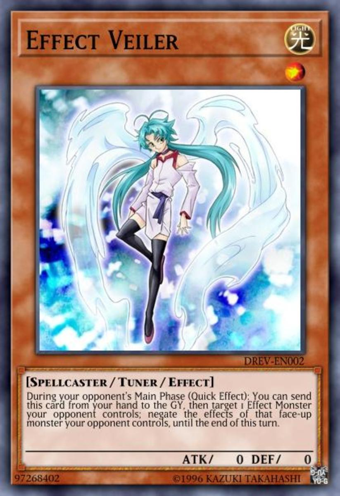

Normal: These cards have no effect. They're usually used as material to summon other cards or for their attack/defense.
Effect: These monsters have a wide range of effects. Almost like a spell or trap card, they can target anything on the field or deck if their effect permits them.

Tuner: Their main use is for synchro summoning. You can't synchro summon without a tuner monster. Synchro Summoning is explained in the Extra Deck Section.



Pendulum: A special type of card that can either be spell or monster. Can be set instantly in the pendulum zones or normal summoned into a monster zone. Within the pendulum zone, it's spell effect is the top description. Within the monster, it's monster effect is the bottom description. To numbers below the blue and red icons indicate the level of monster you can summon. You need two pendulum monsters in the pendulum zones to summon. The left is normally a low number while the right is a high number. Having a large range allows you to special summon monsters that have level within that range for no limit.